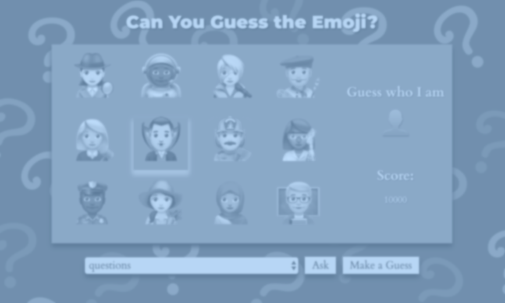
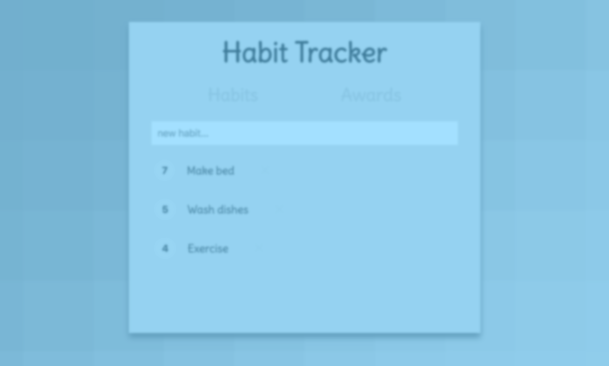

portfolio
Guess the Emoji Game
Habit Tracker
about me
With a background in Marketing and Graphic design, I decided to combine my creative mind and meticulous nature and transition into Full-Stack Web Development.
I graduated with a degree in Psychology from The Catholic University in D.C., and decided to utilize my Psychology knowledge in a Marketing position for a local contracting company in the Philadelphia suburbs. I managed traditional and digital marketing, and the social media accounts for the company. After some Marketing experience, I brought the Graphic Design in-house. The owner of the company, my direct boss, volunteered my Marketing and Graphic Design skills to help local non-profits, where he served on the Board of Directors.
As I explored Graphic Design, I wanted to expand my technical skills, so I began learning Web Development with Codecademy. After completing the free courses, I decided to take a CodeAcademy intensive online course Building Websites from Scratch, where I learned how to build and deploy a websites from spec sheets. I wanted to pursue a career in Web Development, so I moved to New York City to take the full-time Web Development Immersive bootcamp at General Assembly. In the bootcamp, I learned Full Stack Web Development by studying more advanced Vanilla JavaScript, React, PostgresSQL, Node JS, Express JS, and some Ruby to build web applications. In my technical job search, I aim to work for an innovative company in New York.